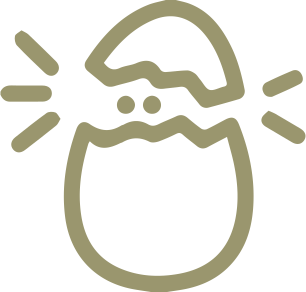

2013


我們有一個很簡單而實際的夢想：相信臺灣可以更好，而讓臺灣更好的力量來自於更多主動參與、向外關注的公民。沃草的英文名字「Watchout」，原意是「提防」和「警戒」，只要我們每個小小公民都能時時張大眼睛、提防警戒，政客就不容易為所欲為。
沃草致力降低公民參與政治的門檻，為讓公民能直擊國會現場，瞭解國會大小事，讓選舉不再只是單向傳播，人民也有機會主動出擊而努力。在經過數百場直播、數千筆報導及上百萬瀏覽人次的累積，沃草仍會持續召喚公民加入我們的行列，一起為降低公民參與政治的門檻而努力。


在沃草推動公民參政的路上，遇過許多難關，常常猜想「大家對這個議題的想法如何」、「如果能夠讓大家一起討論該有多好」，台灣社會到底有沒有可能運用群眾智慧，來尋找爭議議題的最佳解法？因此，沃草將開啟「大草民計畫」，邀集各位伙伴加入草民行列、參與沃草推出的各種互動平台，讓參與政治更容易！
「草民」是什麼？草民就是一直以來關注沃草的你！沃草希望在未來各種計畫中，都能夠有草民與我們一起攜手前進。希望能夠與草民們一起討論、一起發想，透過草民機制，加深與沃草之間的互動，使參與政治變得更加容易。現在，只要成為草民，就能夠透過投票來參與沃草的直播、專題發想，或是在討論區上提出各種超狂的意見……


為了讓沃草可以繼續監督國會，並且繼續成長、為降低公民參與政治的門檻而努力，希望一路支持沃草的你可以一起來餵食阿草！你可以選擇長期認養，或是一次定點餵食。


沃草的核心目標是「讓更多人一起來參與公民社會」；一個成熟的公民社會，絕對不能只靠少數人付出一切去投入在社會運動之中。每個人只要一起付出各自一小部分的時間心力，就能改變這個社會，更接近那個你我嚮往的理想樂土一步。